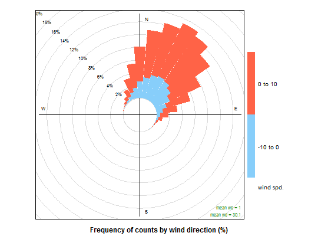

Traditional wind rose plot and pollution rose variation
The traditional wind rose plot that plots wind speed and wind direction by different intervals. The pollution rose applies the same plot structure but substitutes other measurements, most commonly a pollutant time series, for wind speed.
windRose(mydata, ws = "ws", wd = "wd", ws2 = NA, wd2 = NA, ws.int = 2, angle = 30, type = "default", bias.corr = TRUE, cols = "default", grid.line = NULL, width = 1, seg = NULL, auto.text = TRUE, breaks = 4, offset = 10, normalise = FALSE, max.freq = NULL, paddle = TRUE, key.header = NULL, key.footer = "(m/s)", key.position = "bottom", key = TRUE, dig.lab = 5, statistic = "prop.count", pollutant = NULL, annotate = TRUE, angle.scale = 315, border = NA, ...) pollutionRose(mydata, pollutant = "nox", key.footer = pollutant, key.position = "right", key = TRUE, breaks = 6, paddle = FALSE, seg = 0.9, normalise = FALSE, ...)
Arguments
- mydata
- A data frame containing fields
wsandwd - ws
- Name of the column representing wind speed.
- wd
- Name of the column representing wind direction.
- ws2
- The user can supply a second set of wind speed and wind direction values with which the first can be compared. See details below for full explanation.
- wd2
- see
ws2. - ws.int
- The Wind speed interval. Default is 2 m/s but for low met
masts with low mean wind speeds a value of 1 or 0.5 m/s may be better.
Note, this argument is superseded in
pollutionRose. Seebreaksbelow. - angle
- Default angle of “spokes” is 30. Other potentially useful
angles are 45 and 10. Note that the width of the wind speed interval may
need adjusting using
width. - type
typedetermines how the data are split i.e. conditioned, and then plotted. The default is will produce a single plot using the entire data. Type can be one of the built-in types as detailed incutDatae.g. “season”, “year”, “weekday” and so on. For example,type = "season"will produce four plots --- one for each season. It is also possible to choosetypeas another variable in the data frame. If that variable is numeric, then the data will be split into four quantiles (if possible) and labelled accordingly. If type is an existing character or factor variable, then those categories/levels will be used directly. This offers great flexibility for understanding the variation of different variables and how they depend on one another. Type can be up length two e.g.type = c("season", "weekday")will produce a 2x2 plot split by season and day of the week. Note, when two types are provided the first forms the columns and the second the rows.- bias.corr
- When
angledoes not divide exactly into 360 a bias is introduced in the frequencies when the wind direction is already supplied rounded to the nearest 10 degrees, as is often the case. For example, ifangle = 22.5, N, E, S, W will include 3 wind sectors and all other angles will be two. A bias correction can made to correct for this problem. A simple method according to Applequist (2012) is used to adjust the frequencies. - cols
- Colours to be used for plotting. Options include
“default”, “increment”, “heat”, “jet”,
“hue” and user defined. For user defined the user can
supply a list of colour names recognised by R (type
colours()to see the full list). An example would becols = c("yellow", "green", "blue", "black"). - grid.line
- Grid line interval to use. If
NULL, as in default, this is assigned bywindRosebased on the available data range. However, it can also be forced to a specific value, e.g.grid.line = 10. - width
- For
paddle = TRUE, the adjustment factor for width of wind speed intervals. For example,width = 1.5will make the paddle width 1.5 times wider. - seg
- For
pollutionRosesegdetermines with width of the segments. For example,seg = 0.5will produce segments 0.5 *angle. - auto.text
- Either
TRUE(default) orFALSE. IfTRUEtitles and axis labels will automatically try and format pollutant names and units properly e.g. by subscripting the ‘2’ in NO2. - breaks
- Most commonly, the number of break points for wind
speed in
windRoseor pollutant inpollutionRose. ForwindRoseand thews.intdefault of 2 m/s, the default, 4, generates the break points 2, 4, 6, 8 m/s. ForpollutionRose, the default, 6, attempts to breaks the supplied data at approximately 6 sensible break points. However,breakscan also be used to set specific break points. For example, the argumentbreaks = c(0, 1, 10, 100)breaks the data into segments <1, 1-10, 10-100, >100. - offset
- The size of the 'hole' in the middle of the plot, expressed as a percentage of the polar axis scale, default 10.
- normalise
- If
TRUEeach wind direction segment of a pollution rose is normalised to equal one. This is useful for showing how the concentrations (or other parameters) contribute to each wind sector when the proprtion of time the wind is from that direction is low. A line showing the probability that the wind directions is from a particular wind sector is also shown. - max.freq
- Controls the scaling used by setting the maximum value for the radial limits. This is useful to ensure several plots use the same radial limits.
- paddle
- Either
TRUE(default) orFALSE. IfTRUEplots rose using `paddle' style spokes. IfFALSEplots rose using `wedge' style spokes. - key.header
- Adds additional text/labels above and/or below
the scale key, respectively. For example, passing
windRose(mydata, key.header = "ws")adds the addition text as a scale header. Note: This argument is passed todrawOpenKeyviaquickText, applying the auto.text argument, to handle formatting. - key.footer
- see
key.footer. - key.position
- Location where the scale key is to plotted. Allowed arguments currently include “top”, “right”, “bottom” and “left”.
- key
- Fine control of the scale key via
drawOpenKey. SeedrawOpenKeyfor further details. - dig.lab
- The number of signficant figures at which scientific number formatting is used in break point and key labelling. Default 5.
- statistic
- The
statisticto be applied to each data bin in the plot. Options currently include “prop.count”, “prop.mean” and “abs.count”. The default “prop.count” sizes bins according to the proportion of the frequency of measurements. Similarly, “prop.mean” sizes bins according to their relative contribution to the mean. “abs.count” provides the absolute count of measurements in each bin. - pollutant
- Alternative data series to be sampled instead of wind
speed. The
windRosedefault NULL is equivalent topollutant = "ws". - annotate
- If
TRUEthen the percentage calm and mean values are printed in each panel together with a description of the statistic below the plot. - angle.scale
- The wind speed scale is by default shown at a
315 degree angle. Sometimes the placement of the scale may
interfere with an interesting feature. The user can therefore set
angle.scaleto another value (between 0 and 360 degrees) to mitigate such problems. For exampleangle.scale = 45will draw the scale heading in a NE direction. - border
- Border colour for shaded areas. Default is no border.
- ...
- For
pollutionRoseother parameters that are passed on towindRose. ForwindRoseother parameters that are passed on todrawOpenKey,lattice:xyplotandcutData. Axis and title labelling options (xlab,ylab,main) are passed toxyplotviaquickTextto handle routine formatting.
Value
As well as generating the plot itself, windRose and
pollutionRose also return an object of class “openair”. The
object includes three main components: call, the command used to
generate the plot; data, the data frame of summarised information
used to make the plot; and plot, the plot itself. If retained, e.g.
using output <- windRose(mydata), this output can be used to
recover the data, reproduce or rework the original plot or
undertake further analysis.
An openair output can be manipulated using a number of generic operations,
including print, plot and summarise.
Summarised proportions can also be extracted directly using the
$data operator, e.g. object$data for output <-
windRose(mydata). This returns a data frame with three set columns:
cond, conditioning based on type; wd, the wind
direction; and calm, the statistic for the proportion of
data unattributed to any specific wind direction because it was collected
under calm conditions; and then several (one for each range binned for
the plot) columns giving proportions of measurements associated with each
ws or pollutant range plotted as a discrete panel.
Details
For windRose data are summarised by direction, typically by 45 or 30
(or 10) degrees and by different wind speed categories. Typically, wind
speeds are represented by different width "paddles". The plots show the
proportion (here represented as a percentage) of time that the wind is from
a certain angle and wind speed range.
By default windRose will plot a windRose in using "paddle" style
segments and placing the scale key below the plot.
The argument pollutant uses the same plotting structure but
substitutes another data series, defined by pollutant, for wind
speed.
The option statistic = "prop.mean" provides a measure of the
relative contribution of each bin to the panel mean, and is intended for
use with pollutionRose.
pollutionRose is a windRose wrapper which brings
pollutant forward in the argument list, and attempts to sensibly
rescale break points based on the pollutant data range by by-passing
ws.int.
By default, pollutionRose will plot a pollution rose of nox
using "wedge" style segments and placing the scale key to the right of the
plot.
It is possible to compare two wind speed-direction data sets using
pollutionRose. There are many reasons for doing so e.g. to
see how one site compares with another or for meteorological model
evaluation. In this case, ws and wd are considered
to the the reference data sets with which a second set of wind
speed and wind directions are to be compared (ws2 and
wd2). The first set of values is subtracted from the second
and the differences compared. If for example, wd2 was
biased positive compared with wd then pollutionRose
will show the bias in polar coordinates. In its default use, wind
direction bias is colour-coded to show negative bias in one colour
and positive bias in another.
Note
windRose and pollutionRose both use drawOpenKey
to produce scale keys.
References
Applequist, S, 2012: Wind Rose Bias Correction. J. Appl. Meteor. Climatol., 51, 1305-1309.
This paper seems to be the original?
Droppo, J.G. and B.A. Napier (2008) Wind Direction Bias in Generating Wind Roses and Conducting Sector-Based Air Dispersion Modeling, Journal of the Air & Waste Management Association, 58:7, 913-918.
See also
See drawOpenKey for fine control of the scale key.
See polarFreq for a more flexible version that considers
other statistics and pollutant concentrations.
Examples
# load example data from package data(mydata) # basic plot windRose(mydata)# one windRose for each year windRose(mydata,type = "year")# windRose in 10 degree intervals with gridlines and width adjusted ## Not run: ------------------------------------ # windRose(mydata, angle = 10, width = 0.2, grid.line = 1) ## --------------------------------------------- # pollutionRose of nox pollutionRose(mydata, pollutant = "nox")## source apportionment plot - contribution to mean ## Not run: ------------------------------------ # pollutionRose(mydata, pollutant = "pm10", type = "year", statistic = "prop.mean") ## --------------------------------------------- ## example of comparing 2 met sites ## first we will make some new ws/wd data with a postive bias mydata$ws2 = mydata$ws + 2 * rnorm(nrow(mydata)) + 1 mydata$wd2 = mydata$wd + 30 * rnorm(nrow(mydata)) + 30 ## need to correct negative wd id <- which(mydata$wd2 < 0) mydata$wd2[id] <- mydata$wd2[id] + 360 ## results show postive bias in wd and ws pollutionRose(mydata, ws = "ws", wd = "wd", ws2 = "ws2", wd2 = "wd2")